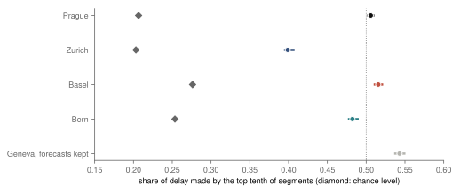
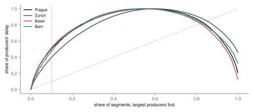
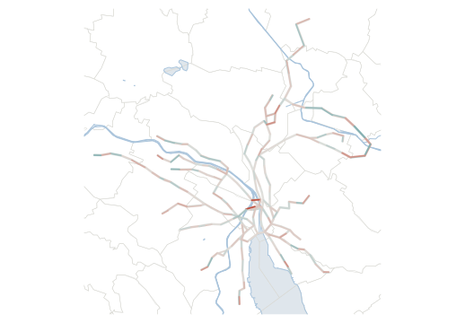
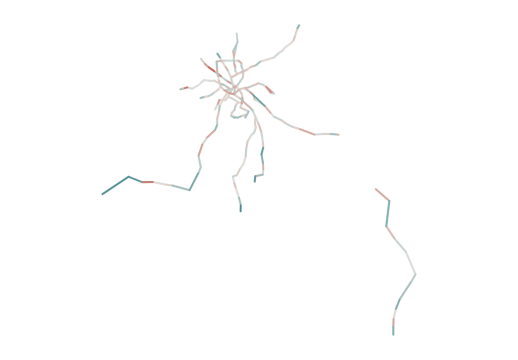
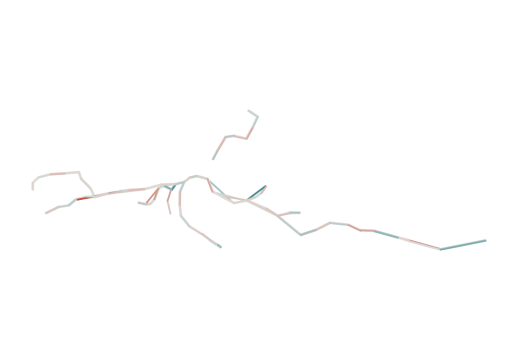

Research · Running late, part 4 · Zurich, Basel and Bern, 2025
Do Swiss trams pile up delay like Prague's?
Basel and Bern pile their delay onto a few stretches much as Prague does and Zurich does not, so the pattern holds roughly, not as a law of trams.
- Zurich
- 39.9 % of delay on the top tenth of 448 segments · −10.7 points from Prague · unlike Prague, less concentrated
- Basel
- 51.6 % of 420 segments · +1.0 points from Prague · like Prague
- Bern
- 48.2 % of 148 segments · −2.4 points from Prague · like Prague
- Prague
- 50.6 % part 1, 618 segments · chance alone would give 20.7 %
Overwhelmed? Here's the short version
- Part 1 found that on Prague's trams, the tenth of segments (stretches from one stop to the next) that make the most delay make 50.6 % of it. This part asks the same of Zurich, Basel and Bern over the same 2025 season, with the same code.
- Basel (51.6 %) and Bern (48.2 %) are within five points of Prague, the margin set in advance (within, not equal); Zurich (39.9 %) is clearly lower. In every city the worst segments are the same from week to week.
- Part of any concentration is chance; the share chance alone would give is higher in Basel and Bern than in Prague. Above it, all three Swiss networks concentrate less than Prague (−10.4, −6.0 and −7.0 points). But ranked by delay per tram instead of in total, all three concentrate more than Prague: the result depends on the measure.
- The author expected the Swiss networks to be less concentrated, because of reserved track and priority at junctions. Zurich fits that on the registered share; Basel and Bern do not. Why the cities differ is not measured.
Prague's trams do not pick up their lost time evenly along a route. Just over half of the delay they gain piles up on a tenth of the stretches, narrowly past the bar set in advance, and on the same stretches week after week.
Part 1 of this series measured that pile-up1. It split the network into segments, the stretch of track from a stop to the next. Over the 2025 season, the 62 of 618 segments with the largest totals made 50.6 % of all the delay gained.
That could be a Prague thing, with its old street network and trams sharing junctions with cars. Or it could be how tram networks work everywhere. Imagine the same ride in Zurich, Basel or Bern.
Those are the three Swiss tram networks that publish every stop time. This part runs the same estimator over them, with the same code for the estimates and over the same season (178 days in Switzerland, 170 in Prague after part 1's screening). Geneva publishes its times too, but marks none of them as measured, so under the registered rule it enters only a check.
Data
Switzerland publishes the actual times of every public-transport vehicle at every stop, one file per day for the whole country2. From 15 March to 8 September 2025, the trams of Zurich's VBZ, Basel's BVB and BLT (one track network, pooled) and Bern's Bernmobil were kept. A pass is one tram's run from a stop to the next. Its gain, the delay it picks up, is the delay at the next stop minus the delay at the first, as in Prague, so it includes the time standing at the first stop.
A pass is kept only if the times at both stops are marked as measured, its gain is within ten minutes and its segment has at least 1 000 kept passes. That keeps 96.9 % of the passes formed in Zurich, 97.7 % in Basel and 98.5 % in Bern. The archive version used here has no stops outside Switzerland, so the ends of Basel's lines into France and Germany fall outside the network. That leaves 448 segments and 15.8 million passes in Zurich, 420 and 11.3 million in Basel, and 148 and 3.8 million in Bern.
Prague and Switzerland both publish timetables to the minute, so in both the delay is measured against the same kind of schedule. The Swiss files do not give the order of stops within a trip, so stops are ordered by their scheduled times. A stop scheduled in the same minute as the one before was dropped rather than ordered by its actual time, which removed 212 229 stops (in all four networks). Otherwise screening followed the Swiss data, not part 1's Prague-specific rules, so the two sides differ in more than the estimator.
How this was done
For each network, S is the share of all delay gained that the tenth of segments with the largest totals make, with a 95 % interval from resampling whole days. Its difference from Prague, D, is labelled by a rule fixed in advance: like Prague if its 90 % interval lies within ±5 points, unlike Prague if its 95 % interval lies wholly outside them. Five points is the smallest difference that would change part 1's sentence, "about half of the delay from a tenth of the segments". It is also about the spread of Prague's monthly shares, which was known when the margin was chosen. Before registration, one Swiss sample day was read for its counts, not its delays.
Some concentration arises even if delay has nothing to do with place, since segments carry different numbers of trams and gains have long tails. The chance level S₀ is the share the top tenth would make if delay were not tied to place. To get it, the segment labels are shuffled among the passes of each day and hour, 199 times, and S is recomputed. The excess over chance, S − S₀, is compared between cities in the same way, with S₀ held fixed, so its intervals leave out S₀'s own small uncertainty.
Basel and Bern like Prague, Zurich not
Basel and Bern pile up their delay about as much as Prague does. Zurich spreads it more evenly.
In Zurich, the worst tenth of segments make 39.9 % of the delay. Its 95 % interval (CI), the range the data leave plausible, runs from 39.6 to 40.6 %. That is −10.7 points from Prague (−11.2 to −9.9), labelled unlike Prague, less concentrated.
In Basel the share is 51.6 % (51.1 to 52.0 %), +1.0 points from Prague, labelled like Prague. In Bern it is 48.2 % (47.8 to 48.9 %), −2.4 points, labelled like Prague.
Like Prague means within five points, which is not the same as equal. Both Basel's and Bern's intervals exclude zero, with Bern lower by 2.4 points.
Part 1's headline was half of the delay on a tenth of the segments. By the rule it used, that is supported in Basel and not supported in Zurich and Bern, where the share falls below one half (fig. 1).
Basel and Bern concentrate their delay about as much as Prague; Zurich less. Every Swiss city stands less far above its chance level.

In every city the worst segments stay the same from week to week. Ordering the segments by their mean gain in odd weeks and again in even weeks gives nearly the same list. The rank correlation, how closely the two orderings agree, is 0.996 in Zurich, 0.995 in Basel and 0.999 in Bern, as in Prague. With thousands of passes per segment that is close to guaranteed, so it shows the pattern belongs to places without showing why. Near one, the resampling intervals of this correlation sit slightly below the estimate, as in part 1.
Above chance, less than Prague
Some piling up would happen even if place did not matter at all, and that baseline differs from city to city. Chance alone would put 20.7 % of Prague's delay on its top tenth and 20.3 % of Zurich's. For Basel it would be 27.6 %, and for Bern 25.4 %.
Basel has nearly as many segments as Zurich, so network size alone does not account for it. The chance level also depends on how unevenly trams are spread over the segments and on the rare very long delays (the tails of the gains). These were not separated here.
Above that level, Prague makes 29.9 points more and Zurich 19.6. Basel makes 23.9 and Bern 22.9.
Counted this way, all three Swiss networks pile up less than Prague. Against Prague, the excess is −10.4 points in Zurich, −6.0 in Basel and −7.0 in Bern, and by the same rule all three are unlike Prague, less concentrated.
Basel is the closest call. Its interval ends at −5.4 points, and its chance level alone ranges from 26.6 to 28.9 %.
Fig. 2 follows the whole curves. Over the largest third of segments, all three Swiss curves sit closer to their chance curves than Prague's does. Further down, the order is no longer fixed. From 49 % of segments on, Zurich's gap is the larger, and in places so is Bern's.
Zurich's curve rises least steeply; at the top tenth, every Swiss curve sits closer to its own chance curve than Prague's does.




Checks
Checks and descriptive rows are reported as registered and not relabelled. Prague's values are part 1's.
| Check | Prague | Zurich | Basel | Bern |
|---|---|---|---|---|
| registered S | 50.6 % | 39.9 % | 51.6 % | 48.2 % |
| ranked by gain per pass | 42.1 % | 46.1 % | 49.4 % | 47.2 % |
| top 5 % | 33.8 % | 24.6 % | 33.4 % | 31.8 % |
| top 20 % | 72.8 % | 62.8 % | 74.0 % | 73.4 % |
| without the first and last segment of each trip | 51.2 % | 42.0 % | 50.1 % | 51.5 % |
| gains within five minutes | 50.7 % | 40.1 % | 51.8 % | 48.4 % |
| segments with ≥ 90 % measured times | – | 40.0 % | 51.9 % | 48.5 % |
| top tenth of network length | 34.8 % | 23.8 % | 36.4 % | 36.9 % |
| by month, lowest to highest | 49.0–52.6 % | 40.0–47.2 % | 51.0–56.5 % | 45.5–49.3 % |
| Gini over producing segments | 0.51 | 0.42 | 0.52 | 0.49 |
| top tenth in peaks and middays, overlap | 0.85 | 0.43 | 0.53 | 0.36 |
| segments that make up time, share | 44 % | 40 % | 44 % | 46 % |
Zurich is the least concentrated of the three Swiss networks in every row that measures concentration. Against Prague the picture is mixed.
Ranked by delay per tram instead of in total, all three Swiss networks concentrate more than Prague (46.1, 49.4 and 47.2 % against 42.1 %). By length and in the top 20 %, Basel and Bern reach or pass Prague.
The "half on a tenth" reading is not robust for Basel or Bern. On these point estimates, Basel ranked per tram falls just below one half, and Bern without the first and last segments rises above it.
The worst segments in the rush-hour peaks and at midday overlap far less in Switzerland than in Prague (0.85). The Gini, a common measure of how unequal a spread is, counts producing segments only here, while part 1 reported one over all segments.
In Basel, BVB's passes alone give 54.1 %, and within the pooled network the top tenth make 66.1 % of the delay of BVB's passes and 78.5 % of BLT's. Keeping times not marked as measured barely moves the shares, and Geneva, which enters only here, gives 54.3 % on 183 segments.
What this means
Measured on the same season and in the same way, Basel's and Bern's trams make a share of their delay on a tenth of their segments within five points of Prague's. Zurich's share is clearly smaller.
The answer shifts with the yardstick. Above what chance alone would give, all three concentrate less than Prague. Ranked by delay per tram, all three concentrate more.
The places hold steady. In all four cities, delay builds up in the same spots week after week. Every network gathers its delay on a few places, but how far, and how that compares with Prague, depends on the measure.
The author expected the Swiss networks to be less concentrated than Prague, because they have more reserved track and priority at junctions. Zurich fits that on the registered share. Basel and Bern do not. Bern is lower than Prague by 2.4 points, but within the margin.
The excess over chance, registered alongside, fits her expectation in all three cities. Delay per tram goes the other way.
Track, junctions, stop spacing and timetables were not measured. So this study cannot tell which of them, if any, explains the difference.
What this does not show
This study does not show why the cities differ.
Network shape, stop spacing, street running against reserved track (trams in traffic or on their own lane), signal priority, timetable padding (spare time built into the schedule) and traffic all vary between them. With four networks, none can be separated from the others.
As in part 1, the place where delay is recorded is not always the place where it is caused.
Other cities, winter and other years are not covered. Stockholm's archive needs a key and a reconstruction from snapshots. Helsinki, the Netherlands and Vienna have no open archive of actual times for the season.
Delay is counted in seconds per tram, not per passenger, so a full tram and an empty one weigh the same.
Reproduction
Every number on this page is filled in from results.json and the screening file by a script. From the repository root:
tools/late/swiss_fetch.py: the monthly archives, tram rows only.swiss_screen.py: the screening and the passes.swiss_estimate.py: the registered estimates and checks, with tests intest_swiss.py; it stops unless it reproduces part 1's published result.swiss_article.py: the figures, the maps and this page.swiss_animation.py: the data of the animated comparison (fig. 2), drawn byassets/late-swiss/cities.jswith d3; the chance curves are a description, not part of the registered analysis.
The design is docs/research/swiss-trams-design.md.
References
- Šandová, B. (2026). Where is delay born on Prague's trams? Running late, part 1. bsandova.com/texts/delay-origins.
- opentransportdata.swiss. Actual data (Ist-Daten), archive of daily files, version 1, March–September 2025, and the cookbook. opentransportdata.swiss/en/cookbook/actual-data; archive.opentransportdata.swiss. Accessed 14 October 2026.
- opentransportdata.swiss. Timetable in GTFS, GTFS_FP2025_2025-06-02, stops. archive.opentransportdata.swiss. Accessed 14 October 2026.